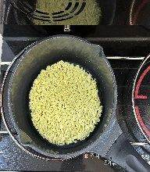
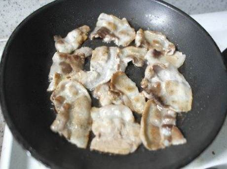
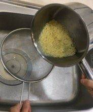
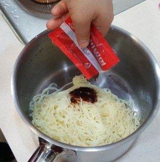
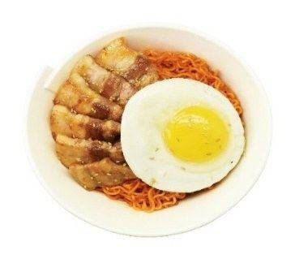

| 메뉴명 | 비삼계 |
|---|---|
| 판매가격 | 7,500원 |
| 원재료 | 팔도 비빔면, 계란후라이, 대패삼겹살, 깨 |
| 사용 부자재 | 라면용기 |
| 메뉴특징 | 매콤,새콤한 소스로 비빈 차가운 비빔면과 노릇노릇 구운 대패삼겹살의 맛있는 조합! |
조리방법

1
후라이팬에 기름을 두르고 계란후라이 1개를 조리한다.
후라이팬에 기름을 두르고 계란후라이 1개를 조리한다.

2
냄비에 면사리를 넣는다.
냄비에 면사리를 넣는다.
3
라면조리기 [비빔면] 모드 선택 후 [시작/정지] 버튼 눌러 조리를 시작한다.
라면조리기 [비빔면] 모드 선택 후 [시작/정지] 버튼 눌러 조리를 시작한다.

4
소분된 삼겹살 1봉(100g)을 후라이팬에 올려 인덕션 6번에서 3분~3분 30초간 앞뒤로 노릇하게 굽는다.
소분된 삼겹살 1봉(100g)을 후라이팬에 올려 인덕션 6번에서 3분~3분 30초간 앞뒤로 노릇하게 굽는다.

5
면이 익으면 채에 받쳐 흐르는 찬물에 충분히 면을 헹궈주고 꾹꾹 눌러 물기를 제거한다.
면이 익으면 채에 받쳐 흐르는 찬물에 충분히 면을 헹궈주고 꾹꾹 눌러 물기를 제거한다.

6
헹군 면사리를 다시 냄비에 담고 비빔면소스를 넣어 젓가락으로 골고루 비벼준다.
헹군 면사리를 다시 냄비에 담고 비빔면소스를 넣어 젓가락으로 골고루 비벼준다.

7
그릇에 옮겨 담고 그 위에 계란후라이, 구운 삼겹살 순으로 올려준 뒤, 깨를 뿌려 완성한다. (단무지 제공)
그릇에 옮겨 담고 그 위에 계란후라이, 구운 삼겹살 순으로 올려준 뒤, 깨를 뿌려 완성한다. (단무지 제공)
※ p.34 비빔면 상세 조리법 참고
※ 기존 라면조리기:
[일반라면]모드로 조리하기
※ 제조 후 최대한 빨리 제공할 것.